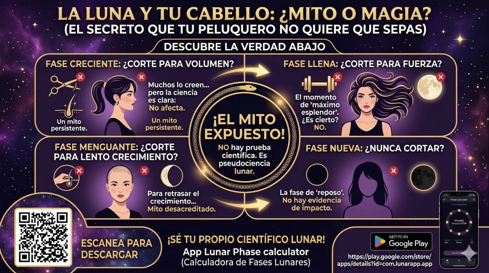

Moon Magic: Complete Guide to Lunar Phases for Ritual Timing
The moon has guided magical practice for millennia. From the Paleolithic cave markings that track lunar cycles to the intricate calendar systems of Babylon, Greece, and the Maya, every culture has recognized the moon's influence on consciousness, emotion, and spiritual power. In modern magical practice, understanding and aligning with lunar phases is one of the most impactful ways to amplify your rituals.
This guide covers everything you need to know about moon magic: the eight lunar phases and their magical correspondences, how to time your spells for maximum effect, the difference between tropical and sidereal lunar calendars, and how technology can help you track lunar cycles with precision.
The Eight Lunar Phases and Their Magical Uses
Most practitioners recognize eight distinct lunar phases. Each phase carries a unique energetic signature that makes it suitable for specific types of magical work.
New Moon
Beginnings, intention setting, divination. The seed phase — plant what you wish to grow.
Waxing Crescent
Growth, attraction, goal setting. Energy is building — take the first steps toward your goal.
First Quarter
Action, decision, overcoming obstacles. Momentum is peaking — push through barriers.
Waxing Gibbous
Refinement, adjustment, preparation. Fine-tune your approach before the full moon.
Full Moon
Peak power, manifestation, celebration. The most potent phase for any working.
Waning Gibbous
Gratitude, sharing, teaching. Harvest what you've manifested and distribute its energy.
Last Quarter
Release, banishing, letting go. Cut cords, end cycles, remove obstacles.
Waning Crescent
Rest, reflection, banishing. The dark moon is a time for deep inner work.
New Moon: The Seed of Intention
The new moon (also called the dark moon) marks the beginning of the lunar cycle. The sky is dark, and the moon is invisible. This is the most powerful time for setting intentions, starting new projects, and planting the seeds of your desires.
Ideal rituals: Intention-setting ceremonies, career beginnings, new relationship spells, divination to reveal hidden paths, creating sigils for long-term goals.
Correspondences: Black, silver, white crystals (moonstone, selenite), jasmine or myrrh incense, the element of water.
Practice: Write your intention on a piece of paper. Fold it three times away from you. Place it under a white candle and meditate on it as the candle burns. Keep the paper on your altar until the full moon.
Waxing Moon: Building Energy
The waxing phase spans from the new moon to the full moon. During this period, the moon's light grows, and magical energy builds. This is the time for attraction magic, growth spells, and any working that requires increasing something in your life.
Waxing Crescent (1-7 days after new moon): Ideal for spells involving attraction, inspiration, and new opportunities. Good for love spells that draw new partners, job search magic, and creative inspiration.
First Quarter (7-10 days after new moon): Action-oriented magic. Break through obstacles, make decisions, and overcome resistance. This is the fire energy of the lunar cycle.
Waxing Gibbous (10-14 days after new moon): Refinement and adjustment. Use this phase to correct course, tweak your methods, and prepare for the full moon climax.
Full Moon: The Peak of Power
The full moon is the most recognized and powerful phase for magical work. The moon is fully illuminated, and its energy is at maximum. Any working performed during the full moon receives a significant energetic boost.
Ideal rituals: Charging tools and talismans, full moon esbat ceremonies, gratitude rituals, group workings, divination for clarity, love spells, prosperity rituals, healing work.
Correspondences: Silver, gold, quartz crystal, frankincense or sandalwood, lunar water (water charged under the full moon).
Practice: Place crystals and tools on a windowsill or outdoors under moonlight. Fill a glass bowl with water and set it in the moonlight — this becomes charged lunar water for future rituals.
Waning Moon: Release and Rest
As the moon wanes, its light diminishes, and energy turns inward. This phase is for banishing, letting go, and releasing what no longer serves you. It is also a powerful time for dream work and shadow work.
Waning Gibbous (1-7 days after full moon): Share your blessings. Teach what you've learned. Perform gratitude rituals and donation magic.
Last Quarter (7-10 days after full moon): Cut cords, end relationships that harm you, banish bad habits, remove obstacles. This is the most potent time for banishing magic.
Waning Crescent / Dark Moon (10-14 days after full moon): Rest, reflection, divination, shadow work. The veil between worlds is thin. Ideal for communicating with ancestors, spirit guides, and performing deep inner healing.
Tropical vs. Sidereal Lunar Calendar
Most Western practitioners use the tropical lunar calendar, which divides the lunar cycle based on the moon's phase relative to the sun. However, Vedic astrology and some esoteric traditions use the sidereal lunar calendar, which tracks the moon's position against the fixed stars.
The difference matters: the moon completes a full cycle of phases in about 29.5 days (tropical), but returns to the same fixed star position in about 27.3 days (sidereal). For precision work — especially evocation and astrological magic — the sidereal calendar provides greater accuracy. A good lunar phase calculator app should support both systems.
Lunar Eclipses: Exceptional Power Windows
Lunar eclipses occur during the full moon when the Earth passes between the sun and moon. These are exceptionally powerful windows for magical work, but they require caution:
- Total lunar eclipse: Amplifies full moon energy tenfold. Ideal for major manifestation rituals, but emotions run high — don't perform work you're not fully committed to.
- Partial lunar eclipse: Good for transitional magic — things that are ending and beginning simultaneously.
- Penumbral lunar eclipse: Subtle but potent for shadow work and uncovering hidden knowledge.
The next lunar eclipse visible in the Americas occurs on March 3, 2026. Mark your calendar.
Incorporating Lunar Tracking into Daily Practice
Consistent lunar tracking transforms your magical practice. Here are practical steps to integrate lunar awareness into your daily routine:
- Check the phase daily: Use a lunar phase calculator app or website to know exactly which phase the moon is in at any time, including precise minutes of phase changes.
- Set lunar alarms: Configure notifications for significant phase transitions — new moon, first quarter, full moon, last quarter — so you never miss a ritual window.
- Maintain a lunar journal: Record your rituals alongside lunar phase data. Over months, you'll discover which phases produce the strongest results for your unique magical signature.
- Plan ahead: At the start of each lunar month (new moon), plan your magical activities for the entire cycle. This prevents missed opportunities and allows you to prepare properly.
Moon Magic and Technology
Modern technology makes lunar tracking effortless. A dedicated lunar phase calculator app provides instant access to precise phase times, illumination percentages, moonrise/moonset times, and upcoming eclipse dates. The best digital tools for lunar magic include:
- Precise phase calculation to the minute, not just the day
- Support for both tropical and sidereal systems
- Almanac-style predictions for months or years ahead
- Widget for quick reference throughout the day
- Offline functionality for remote ritual work
Track Lunar Phases with Precision
Our Lunar Phase Calculator app gives you instant access to precise moon phase times, illumination percentages, and upcoming eclipses. Supports tropical and sidereal systems — all offline, no ads, no tracking.
Get Lunar Phase Calculator — $3.99100% offline • No ads • No tracking • One-time payment
Lunar Correspondences Table for Quick Reference
- New Moon: Beginnings, divination, intention-setting, planting seeds
- Waxing Crescent: Attraction, growth, inspiration, new opportunities
- First Quarter: Action, decision-making, overcoming obstacles
- Waxing Gibbous: Refinement, adjustment, preparation
- Full Moon: Peak power, charging, manifestation, gratitude
- Waning Gibbous: Sharing, teaching, harvesting, distribution
- Last Quarter: Release, banishing, cord-cutting, endings
- Waning Crescent: Rest, reflection, shadow work, ancestor communication
Final Thoughts
Moon magic is not about following rigid rules — it's about developing a relationship with the living cycles of nature. The more you observe and align with lunar phases, the more attuned you become to the subtle currents of energy that shape our reality. Whether you're casting a full moon circle under the open sky or tracking phase transitions on your phone, the key is consistent awareness.
Start your lunar practice today. Check tonight's phase. Set an intention for the next new moon. And let the moon be your guide.
References
- Rudhyar, D. (1936). The Astrology of Personality. New York: Lucis Publishing.
- Greene, L. (1978). Relating: An Astrological Guide to Living with Others. London: Coventure.
- Herschel, W. (1787). "Observations of the lunar phases and their effects on terrestrial phenomena." Philosophical Transactions of the Royal Society, 77, 229-248.